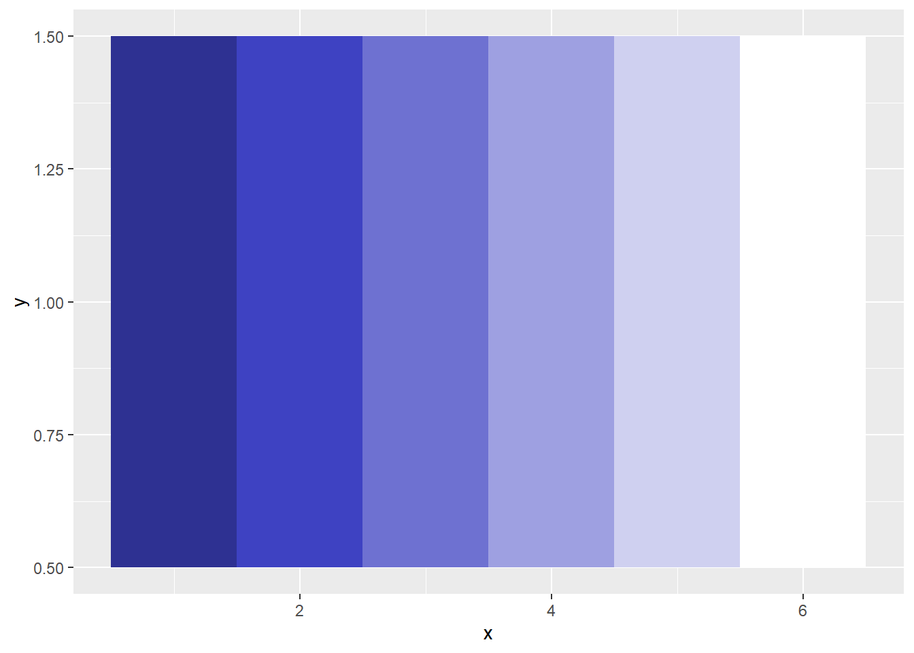
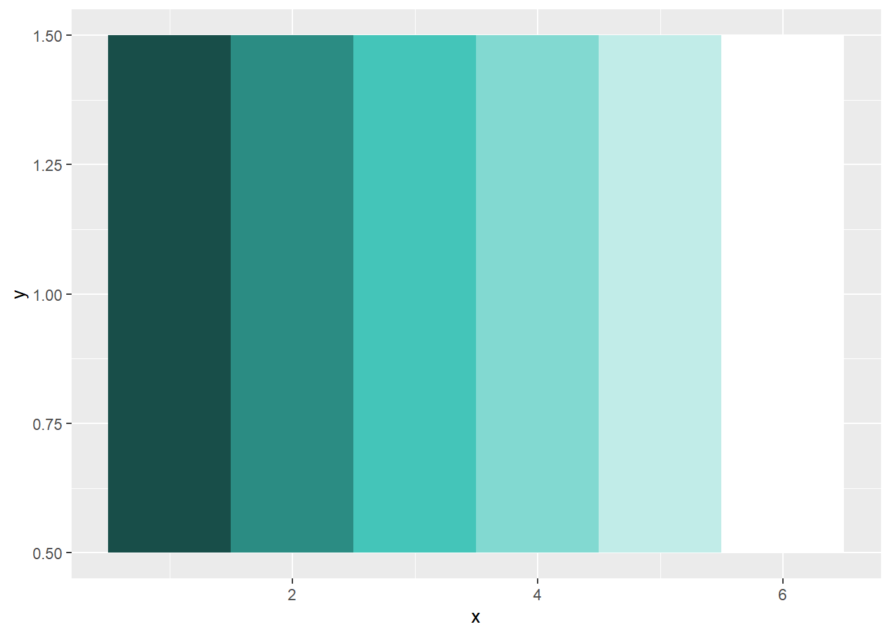
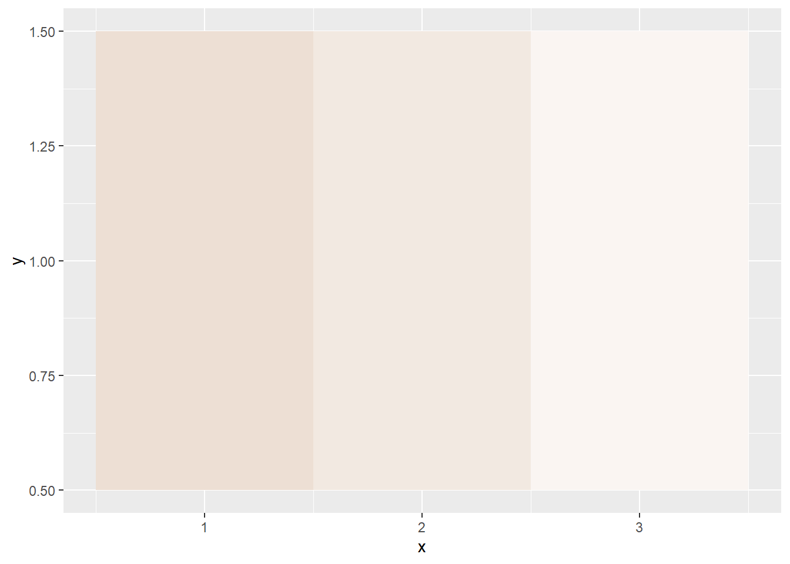

Warning: package 'dplyr' was built under R version 4.4.3Color Palettes
As our “good enough for now” set of colors, we will adopt the new ODHS color palette as our primary palette for most OEDA publications. The palette is detailed in Brand Guidelines (pp. 41-47; p. 54), available from Publications and Creative Services.
List of basic palette colors
The list below contains the main colors identified in the guidelines.
OEDA_colors <- list(
northstar = '#2E3192',
glacial = '#B4DCF5',
fog = '#F4F2ED',
forest = '#184E49',
willamette = '#86C679',
mist = '#D8E1E5',
marionberry = '#A91F50',
harvest = '#ECD263',
desert = '#EDDFD4',
black = '#000000',
white = '#FFFFFF',
charcoal = '#414042'
)Roles
These are the basic roles assigned to these colors in the publications guide.
| Color | Role |
|---|---|
| North Star Indigo | Primary color |
| Forest Green | Secondary color |
| Marionberry Red | Tertiary color |
| Glacial Blue | Accent color |
| Willamette Green | Accent color |
| Harvest Gold | Accent color |
| Fog Gray | Neutral color |
| Mist Gray | Neutral color |
| Desert Sand | Neutral color |
| Primary Black | Core neutral |
| Primary White | Core neutral |
| Ashland Charcoal | Core neutral |
Meaning-neutral document components
| Document | Component | Example | Light Mode |
|---|---|---|---|
| Brief, memo, web page, blog entry | Background | Page background | Primary White |
| Brief, memo, web page, blog entry | Title | Heading 1 | North Star Indigo |
| Brief, memo, web page, blog entry | Section heading | Heading 2-5 | Forest Green |
| Brief, memo, web page, blog entry | Body text | Blocks of text (text color) | Ashland Charcoal |
| Brief, memo, web page, blog entry | Card | Asides, boxouts, breakout boxes, etc. (background color) | Mist Gray |
| Brief, memo, web page, blog entry | Lines | Horizontal rules | Ashland Charcoal |
| Visualization | Background | Plot background and panel background | Fog Gray |
| Visualization | Title | Plot title | North Star Indigo |
| Visualization | Background | Facet background | North Star Indigo |
| Visualization | Section heading | Facet title | Primary White |
| Visualization | Body text | Subtitles or captions | Forest Green |
| Visualization | Lines | Borders, axes, ticks | Ashland Charcoal |
Note: Visualizations should be of a consistent OEDA style, regardless of whether the document overall is produced in dark or light mode.
Meaning-conveying documents components
| Document | Component | Meaning | Background | Foreground |
|---|---|---|---|---|
| Brief, memo, web page, blog entry | Call out | Neutral | Glacial Blue | Ashland Charcoal |
| Brief, memo, web page, blog entry | Call out | Growth, meeting expectations, optimistic comparison | Willamette Green | Ashland Charcoal |
| Brief, memo, web page, blog entry | Call out | Attention needed, missing expectations, pessimistic comparison | Harvest Gold | Ashland Charcoal |
| Visualization | Call out | Neutral geom | n/a | Ashland Charcoal |
| Visualization | Call out | Geom indicating growth, meeting expectations, optimistic comparison | n/a | Willamette Green |
| Visualization | Call out | Geom indicating attention needed, missing expectations, pessimistic comparison | n/a | Harvest Gold |
Text callouts include Quarto call out elements styled using the Custom Callout Quarto extension as well as blockquotes or line blocks.
Vis callouts include the fill color of columns, bars, boxplots, points, etc.
Calculating tints
The function below takes a color from the OEDA palette (or any hex color, really) and computes various tints of it. I have not been able to determine just how the publications office creates their tints, so the tints output from this function do not exactly match the tints displayed in the publication guide.
#' Create a tint of a base color
#'
#' This function generates a tint by mixing a base hex color with white in the HSL
#' (Hue, Saturation, Lightness) color space. This method is perceptually more
#' uniform than mixing in RGB space. tint_percent = 100 should return the base_hex.
#' tint_percent = 0 should return pure white ("#FFFFFF").
#'
#' @param base_hex A character string of the starting hex color (e.g., "#2E3192").
#' @param tint_percent A numeric value from 0 to 100 representing the
#' percentage of the original color to retain. A value of 80 creates a tint
#' which is 80 parts the base color and 20 parts pure white.
#'
#' @return A character string for the new hex color.
#' @export
create_tint <- function(base_hex, tint_percent) {
pct_white <- (100 - tint_percent) / 100
hsl_start <- plotwidgets::col2hsl(base_hex)
hsl_end <- hsl_start
hsl_end[3] <- ((1 - hsl_start[3]) * pct_white) + hsl_start[3]
col_end <- plotwidgets::hsl2col(hsl_end)
return(col_end)
}Examples of North Star Indigo tints
lapply(seq(100,0,-20), function(x) create_tint(OEDA_colors$northstar, x)) |>
unlist() |>
as_tibble() |>
mutate(x = row_number()) |>
mutate(y = 1) |>
ggplot() +
aes(x = x, y = y, fill = value) +
geom_tile() +
scale_fill_identity()
Examples of Forest Green tints
lapply(seq(100,0,-20), function(x) create_tint(OEDA_colors$forest, x)) |>
unlist() |>
as_tibble() |>
mutate(x = row_number()) |>
mutate(y = 1) |>
ggplot() +
aes(x = x, y = y, fill = value) +
geom_tile() +
scale_fill_identity()
Examples of Desert Sand tints
lapply(c(100, 70, 30), function(x) create_tint(OEDA_colors$desert, x)) |>
unlist() |>
as_tibble() |>
mutate(x = row_number()) |>
mutate(y = 1) |>
ggplot() +
aes(x = x, y = y, fill = value) +
geom_tile() +
scale_fill_identity()
Other vis palettes
We will make recommendations for other palettes when comparisons are not between a small number of categories, but are multinomous categorical or continuous (sequential or divergent).